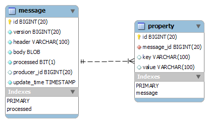

| Overview |  |
Copyright © 2010-2014 Alexei Krasnopolski
Version: 1.2.8
Introduced in: 2011-03-31
Authors: Alexei Krasnopolski (krasnop@bellsouth.net) [web site: http://krasnopolski.org/].
The module represents an example of using of erlang client. Function run/0 initiates an execution of 3 processes named 'producer', 'consumer' and 'cleaner'. First process generates and inserts to database a messages, second one retrives and processes the messages and third process deletes processed messages from database. The processes are running concurrently and are using separate connection to database. Fourth process is watcher that is periodicaly asking database for count of processed messages. If database is empty the task is completed.
| create_schema/0 | Create two tables: 'message' and 'property'. |
| delete_message/1 | Deletes message with Id and correspondend property rows. |
| get_count_messages/1 | Gets count of rows in message table. |
| get_messages_list/1 | Retrieves a list of ids of messages marked processed or unprocessed. |
| insert_message/4 | The function inserts to database one message entity and three property entities these belong to the message. |
| process_entry/1 | Marks message with Id as processed. |
| run/0 | Starting point for example application. |
| run_cleaner/0 | The function starts concurrent_runner for delete entry operations and waiting for stop message. |
| run_consumer/0 | The function starts concurrent_runner for process entry operations and waiting for stop message. |
| run_producer/1 | The function inserts some amount of messages to database. |
| run_watcher/1 | The function establishes connection to database and recursively retreives count of messages in the database. |
| watcher/3 | Recursively queries message table for count of rows. |
run() -> any()
Starting point for example application. The function creates 2 tables in database and spawns 3 processes: producer, consumer and cleaner. Then it begins to wait for 'start_watch' message. After the message is received watcher process is started and main process goes to wait for 'stop' message. 'start_watch' message is generated by producer after last message has inserted to database. 'stop' message is generated by watcher after database returns to empty state.
run_producer(P_pid::pid()) -> any()
The function inserts some amount of messages to database. And then it sends a message 'start_watch' to parent (main) process.
run_consumer() -> any()
The function starts concurrent_runner for process entry operations and waiting for stop message. Each 100 milisecond concurrent_runner is restarted.
run_cleaner() -> any()
The function starts concurrent_runner for delete entry operations and waiting for stop message. Each 100 milisecond concurrent_runner is restarted.
run_watcher(P_pid::pid()) -> any()
The function establishes connection to database and recursively retreives count of messages in the database. If database is empty then completes execution.
create_schema() -> any()
Create two tables: 'message' and 'property'. 'Message' has one-to-many relationship to 'property' table.

insert_message(Connection::#connection{}, N::integer(), M::integer(), SleepTime::integer()) -> any()
The function inserts to database one message entity and three property entities these belong to the message. N - number of message, M - amount of message to insert, SleepTime - delay between insert operations.
get_messages_list(Processed::integer()) -> any()
Retrieves a list of ids of messages marked processed or unprocessed. The list size is limited to 10.
process_entry(Id::integer()) -> any()
Marks message with Id as processed.
delete_message(Id::integer()) -> any()
Deletes message with Id and correspondend property rows.
watcher(Connection::pid(), P_pid::pid(), N::integer()) -> any()
Recursively queries message table for count of rows. If the table becomes empty the function sends 'stop' to parent process.
get_count_messages(Connection::pid()) -> any()
Gets count of rows in message table.
Generated by EDoc, Feb 14 2016, 03:18:58.